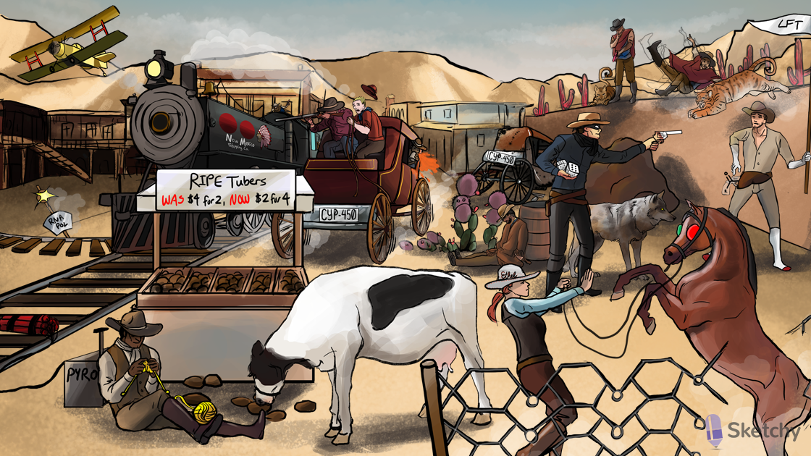

 
RIPE: combination of rifampin, isoniazid, pyrazinamide, and ethambutol used to prevent development of resistant strains of Mycobacterium tuberculosis
2 phases of tuberculosis treatment -4 drugs for 2 months followed by 2 drugs (i.e. isoniazid and rifampin) for 4 months
The Isolated Ranger: isoniazid (INH)(RIPE therapy)
Middle lobe bullet hole: primary TB (often presents as middle lobe cavity
Sleeping: INH can be used alone to treat latent TB infections
Branching cacti on wall: mycolic acids (essential components of the mycobacterial cell wall)
Mycobacteria cowboy shot off wall: INH acts on the mycobacterial cell wall by inhibiting mycolic acid production
Aggravating G tailed cat: INH is activated by a catalase-peroxidase (KatG)
Silenced G tailed cat: mycobacteria develop resistance to INH by downregulating Kat G
Bandit in stockings and gloves: INH cancause peripheral neuropathy
Slow acetyl-gunslinger: INH metabolized by the liver enzyme N-acetyltransferase (slow acetylators have higher risk of side effects)
Pair of dice (sixes): INH promotes excretion pyridoxine (vitamin B6) --> peripheral neuropathy
Ungloved hand holding pair of dice: coadministration of INH and pyridoxine prevents peripheral neuropathy
Motion lines: INH cancause seizure

Liver spot: hepatotoxicity associated with all RIPE therapy drugs
Raised LFT flag: INH causes an asymptomatic rise in aminotransferases
Wolf: INH cancause drug induced lupus
MUD PILES: INH cancause anion gap metabolic acidosis

Broken chrome bumper: INH inhibits cytochrome P450
The Rifle: rifampin(RIPE therapy)
Speeding chrome bumper: rifampin activates cytochrome P450
Shot RNA track switch: rifampin binds bacterial DNA dependentRNA polymerase
Close contact with rifle: rifampin monotherapy is used as prophylaxis in close contacts exposed to Haemophilus influenzaeor Neisseria meningitidis
Meningitis mohawk: Neisseria meningitidis(rifampin prophylaxis)
H plane: Haemophilus influenzae(rifampin prophylaxis)
Orange fluid: rifampin may produce orange body fluids
Ethel the Horse Whisperer: ethambutol (RIPE therapy)
Arabian horse at the carbohydrate wall: ethambutol blocks arabinosyl transferase, inhibiting carbohydrate formation at the cell wall
Halt!: ethambutol is bacteriostatic
Red-green blinders: ethambutol can cause optic neuritis (loss of visual acuity, red-green color blindness)
The Pyro: pyrazinamide(RIPE therapy)
Yellow needles: pyrazinamide cancause hyperuricemia and needle-shaped uric acid crystal formation
Needles in yarn ball on toe: pyrazinamide may precipitate gout attacks